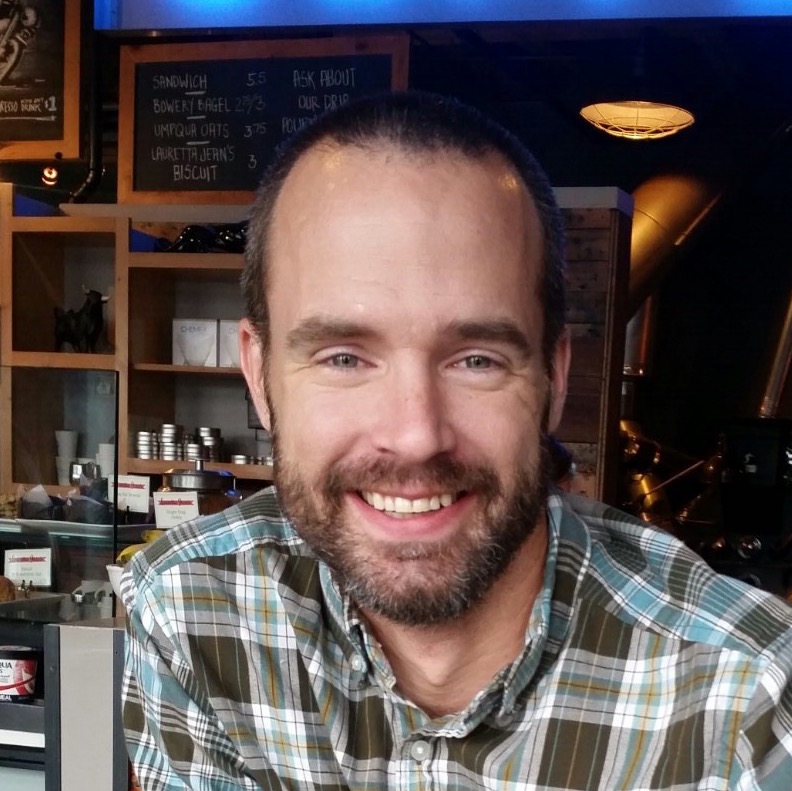

<div class="about">
    <div class="content">
        
        <p class="paragraph">
            Welcome!  I'm a full-stack developer with a passion for clean code, test-driven development, and the
            open spirit of the JavaScript ecosystem.  I currently work primarily with Angular, Node.js & Java, although
            I am currently expanding my repertoire to include React & Redux.
        </p>
        <p class="paragraph">
            <a routerLink="/blog">My blog</a> is where I document lessons learned, fun projects and my efforts exploring the
            inner workings of my favorite frameworks and tools, such as Angular 4, Webpack, & AWS.  You can view
            <a routerLink="/projects">my projects</a> on this site or on <a href="https://github.com/adamfitzpatrick">my Github page</a>.
        </p>
        <p class="paragraph">
            In the next month, I will be adding a comments section to each blog page.  For now, if you wish to reach me
            with any comments or questions about my writing, feel free to email me: adam at stepinto.io.
        </p>
        <p>
            This site is written in TypeScript using Angular 4, and utilizes Webpack 2 for a super easy build process.
            APIs for the site are provided by a separate backend application composed in Node.js with Express.
            Continuous integration is provided by Travis CI, and everything is deployed on AWS.
        </p>
    </div>
</div>